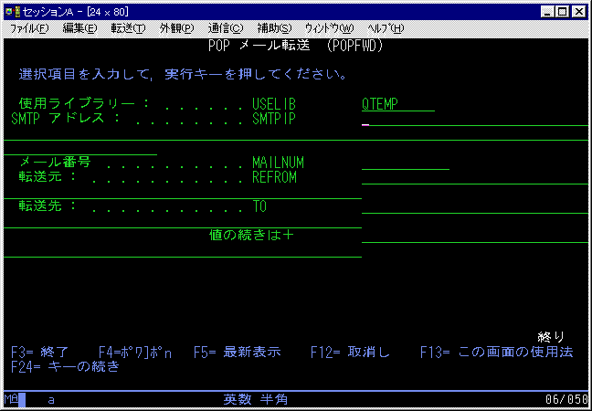

AS/400 POPメール転送コマンド POPFWD
掲載日: 2001/3/3, 更新日: 2001/3/3
＜概要＞
受信したメールを転送します。

使用ライブラリー：
POPCHKコマンドで受信したデータの入っているライブラリーを指定します。
SMTPアドレス：
転送メールの送信に利用するSMTPサーバーのIPアドレスを指定します。
メール番号：
転送するメールの番号（連番）
転送元：
転送する発信元メールアドレス(SMTPヘッダーにResent-from:をつけます）
転送先：
転送する宛先メールアドレス(SMTPヘッダーにResent-to:をつけます）
[戻る]